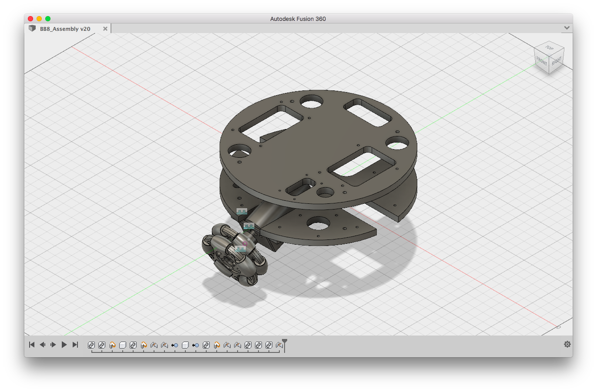
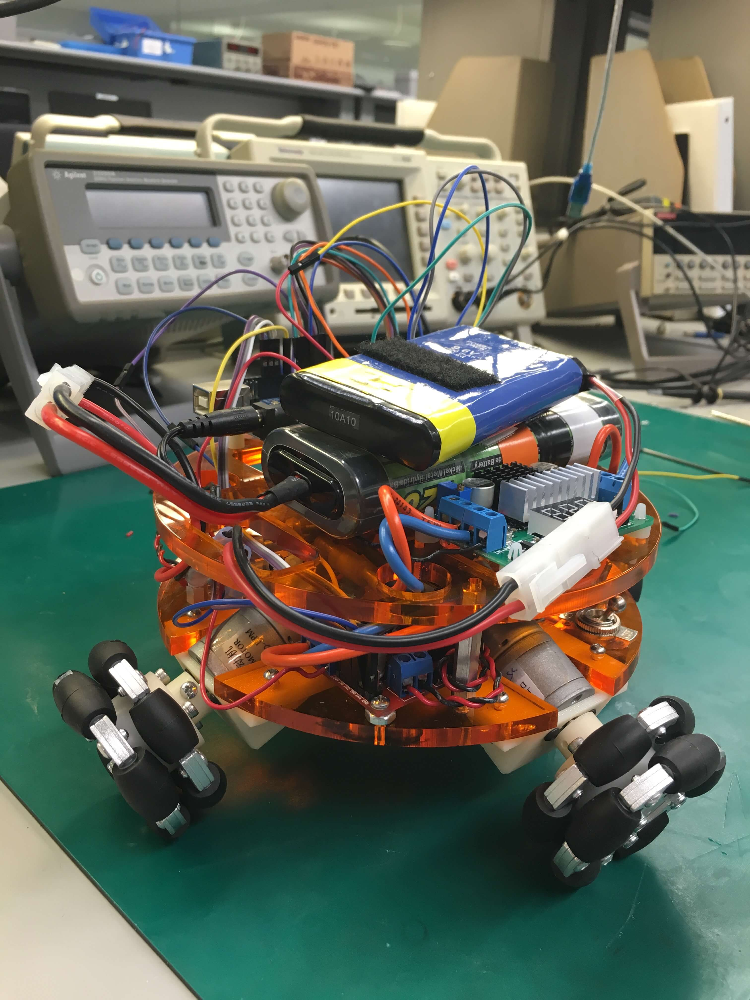

Star Wars inspired us to build our own cute ball-balancing robot. In the end, we had designed and built a live-sized droid that could stay balanced atop a 50cm ball for over two minutes. I worked with
James Almeida on this as part of the final project for our Car Lab class.
Background
We have a notoriously difficult class at Princeton called Car Lab that all electrical engineering majors must take. As Juniors, we apply all that we have learned so far to control the speed and direction of a model car. Afterwards, we define and build a project on our own. This robot was mine and James'. We designed, built, and wrote the code controlling BB-8.
Design
We had about 6 weeks to take BB-8 from inception to completion. Due to this constraint, we ended up sourcing many electrical components rather than building our own custom circuits. For example, we purchased motor controllers to regulate speed rather than solder together our own H-bridges. Parts were sourced from standard retailers (Adafruit, Digikey, Sparkfun, McMaster etc). For simplicity and familiarity, we controlled the entire system with an Arduino.
I had some past experience in CAD, and as soon as we had settled on components, I whipped up a quick model showing how they could all be fit together. It quickly became apparent that space would be the primary limitation for our design, and we adopted a two-level frame to contain all the parts. The components channeling the most current, such as motors and their controllers, were placed on the lower level to decrease how their noise would affect the sensors on the upper layer.

The system is designed for easy manufacture and repair. The two plates can both be laser-cut out of a single plate of acrylic, while the motor-mounts can be 3D-printed. The entire assembly can be taken apart by loosening 4 machine screws, giving access to individual components.
Build Process
We laser-cut the acrylic. We 3D-printed the mounts. We screwed on the components and routed the wires. This was the simplest and quickest part of the entire project.

Balancing
Ball-balancing can be thought of essentially as an
inverted pendulum in 2-axis. In order to stay balanced, BB-8 would need to keep its center of mass within a small window on top of the ball. We achieved this with two PID loops that adjusted the robot in each axis.
Omni-wheels were used to allow BB-8 to move smoothly in any direction.
Though the system appeared simple to model, in actuality the exercise ball proved to be too light for the motors to keep up with. As a result, we tried weighting the inside of the ball with different materials, eventually settling on sand. The sand resulted in rocking that was difficult to model. As a result, the constants for the PID loops were determined experimentally. We were able to stay balanced on top of the ball, but rocking motion meant that the robot could never stay still.
More to Come
Aesthetics were largely neglected due to time and monetary budgets. We would love to 3D-print and decorate a shell for our BB-8 'head'. A custom shell would also open up the possibility of mounting additional sensors and actuators (video camera, speakers, etc).
We would also like to improve the balancing performance. As of right now, BB-8 moves around considerably to remain perched on its ball. We would like to replace the current exercise ball with something that has mass, such that sand will not be needed. Ideally, BB-8 will be able to stay balanced while staying almost completely still. This increased stability would also open up the possibility of moving BB-8 at will. It could be programmed to follow certain paths, or take instructions from a remote controller.